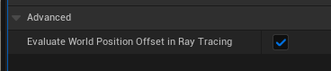
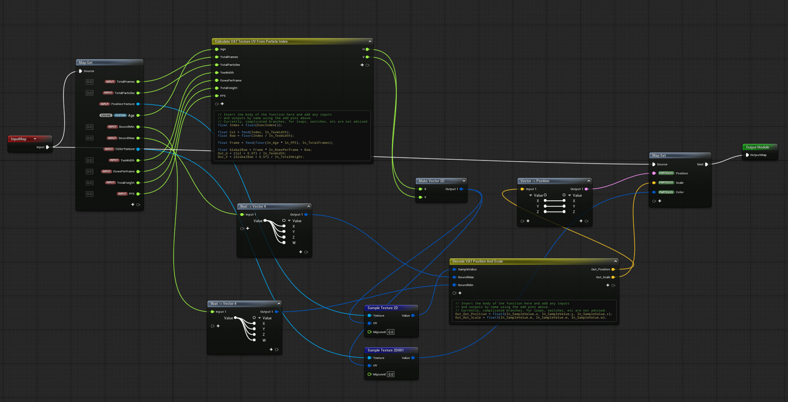

Due to Niagara's limitations when importing large numbers of particles into Unreal, and the fact that VAT Particle Sprites only support card-shaped geometry, I am testing whether I can extract data such as position and rotation from VAT textures and feed it into Niagara. This would allow me to render the particles as spheres or any 3D shape using Niagara's Mesh Renderer.
Only Render Card Shape
VAT Test
In order to quickly import 500,000 particles from Houdini, I started with VAT to bake the particle movement into textures. Since the simulation's point count is 500,000 and the per-frame limit is 221,184, I divided the particles into separate groups based on their ID attribute so that each group would not exceed the maximum.
Another problem is that when I import VAT Particle Sprites, the shadow shape matches the original mesh before the material is applied.
The mesh does not have the material assigned.
Enabling "Evaluate World Position Offset in Ray Tracing" allows the shadow pass to calculate the mesh shape based on the WPO-displaced positions rather than the original geometry.

To solve this problem, I also tried combining VAT with Niagara by extracting data from the VAT position texture and applying it to Niagara. This way, within the Niagara system, I can choose any shape to represent the particles. Also, need to use full precision UVs for mesh.
The Niagara module reads VAT data by first calculating UV coordinates in a Custom HLSL node, using each particle's index and the current time to determine which pixel to sample from the VAT texture. The U and V outputs are combined into a Vector2D and fed into two texture samplers — one for the position texture and one for the color texture. The sampled position values, which are normalized between 0 and 1, are then remapped to world-space coordinates using the bounding box min and max values exported from Houdini. Finally, the results are written back to each particle's Position, Scale, and Color attributes through a Map Set node. This allows Niagara to drive hundreds of thousands of particles using pre-simulated Houdini data at real-time performance.

This HLSL module converts each particle's index and current time into UV coordinates for sampling the VAT texture. All key parameters are exposed as inputs, making it reusable across different VAT setups without code changes.
This HLSL module converts each particle's index and current time into UV coordinates for sampling the VAT texture. All key parameters are exposed as inputs, making it reusable across different VAT setups without code changes.
This node extracts position and scale data from the sampled VAT texture. The RGB channels store the particle's XYZ position, while the Alpha channel stores a uniform scale value applied equally to all three axes.
Every parameter can be adjusted here once a new VAT particle texture is imported.
First, I tried using the Mesh Renderer with a sphere, but the FPS was very low because it had to render 500,000 points. The FPS is about 18.
Another thing to note is that to prevent particle flickering, Motion Vectors needs to be set to Disable. If flickering still persists, shadows should also be turned off.
This is the final result combining VAT and Niagara, with shadows displaying correctly and maintaining good FPS.